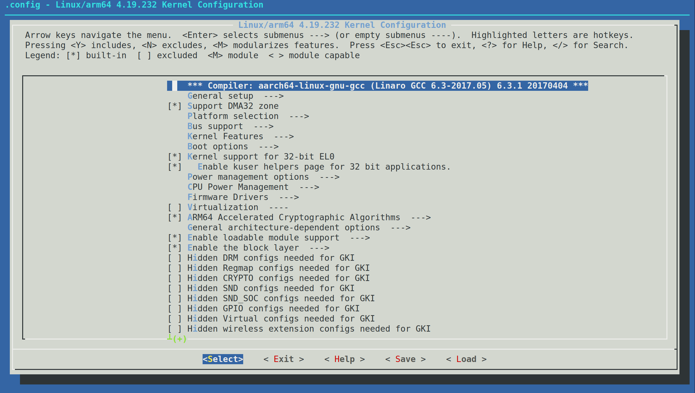

<!DOCTYPE lake>
<h1 data-lake-id="HIXCL" data-lake-index-type="2" id="HIXCL"><span data-lake-id="ucdb899b6" id="ucdb899b6">打开图形化配置界面</span></h1><p data-lake-id="uf04f0643" id="uf04f0643"><span data-lake-id="u23152a54" id="u23152a54">在</span><code data-lake-id="u78314f51" id="u78314f51"><span data-lake-id="u9094050c" id="u9094050c">kernel</span></code><span data-lake-id="u89539168" id="u89539168">目录下,执行如下命令</span></p><span class="yuque-card-unsupported">[codeblock]</span><p data-lake-id="u9a02060f" id="u9a02060f"></p><h1 data-lake-id="bhwu5" data-lake-index-type="2" id="bhwu5"><span data-lake-id="u12006774" id="u12006774">图形化配置界面操作</span></h1><p data-lake-id="u21b52980" id="u21b52980"><strong><span data-lake-id="u0a0ce088" id="u0a0ce088">驱动状态:</span></strong></p><ol list="u3ae3bfc2"><li data-lake-id="u27d94383" fid="u69df3b92" id="u27d94383"><span data-lake-id="uf1e0e105" id="uf1e0e105">把驱动编译成模块,用M表示</span></li><li data-lake-id="u10dd7452" fid="u69df3b92" id="u10dd7452"><span data-lake-id="ub3dd2b96" id="ub3dd2b96">把驱动编译到内核里面,用*表示</span></li><li data-lake-id="u1bda09fb" fid="u69df3b92" id="u1bda09fb"><span data-lake-id="uc756cba5" id="uc756cba5">不编译</span></li></ol><p data-lake-id="u79fb2658" id="u79fb2658"><span data-lake-id="ua8cca633" id="ua8cca633">使用'空格'按键来配置三种状态</span></p><p data-lake-id="u9d89a844" id="u9d89a844"><strong><span data-lake-id="ud7751792" id="ud7751792">选项状态</span></strong></p><p data-lake-id="u5f555696" id="u5f555696"><span data-lake-id="u9043c0ba" id="u9043c0ba">选项状态有[],&lt;&gt;,()三种</span></p><p data-lake-id="ub37c3c01" id="ub37c3c01"><span data-lake-id="ub5467a05" id="ub5467a05">[]: 表示有两种状态</span></p><p data-lake-id="u2a2f5f22" id="u2a2f5f22"><span data-lake-id="ue8a6441c" id="ue8a6441c">&lt;&gt;: 表示有三种状态</span></p><p data-lake-id="uc8a7d3bc" id="uc8a7d3bc"><span data-lake-id="ufed8e33b" id="ufed8e33b">(): 表示用来存放字符串或16进制数</span></p><h1 data-lake-id="dfJ3J" data-lake-index-type="2" id="dfJ3J"><span data-lake-id="u980907dd" id="u980907dd">make menuconfig原理</span></h1><p data-lake-id="u7fb8b8b5" id="u7fb8b8b5"><code data-lake-id="u97f20ad1" id="u97f20ad1"><strong><span class="lake-fontsize-11" data-lake-id="u433d27e8" id="u433d27e8" style="color: rgb(97, 92, 237); background-color: rgb(239, 238, 255)">make menuconfig</span></strong></code><strong><span class="lake-fontsize-12" data-lake-id="u49acc5db" id="u49acc5db" style="color: rgb(143, 145, 168)"> 启动时，会先加载 </span></strong><code data-lake-id="u0a76fcea" id="u0a76fcea"><strong><span class="lake-fontsize-11" data-lake-id="u66fdff20" id="u66fdff20" style="color: rgb(97, 92, 237); background-color: rgb(239, 238, 255)">.config</span></strong></code><strong><span class="lake-fontsize-12" data-lake-id="ue661f0d1" id="ue661f0d1" style="color: rgb(143, 145, 168)"> 作为“当前配置状态”，再读取所有 </span></strong><code data-lake-id="uc8c4e15e" id="uc8c4e15e"><strong><span class="lake-fontsize-11" data-lake-id="u8bc52fa8" id="u8bc52fa8" style="color: rgb(97, 92, 237); background-color: rgb(239, 238, 255)">Kconfig</span></strong></code><strong><span class="lake-fontsize-12" data-lake-id="u7ea32b4e" id="u7ea32b4e" style="color: rgb(143, 145, 168)"> 文件构建“完整菜单结构”，最终把两者结合，生成图形界面 —— 你点的是“当前配置”，看的是“完整菜单”。</span></strong></p>